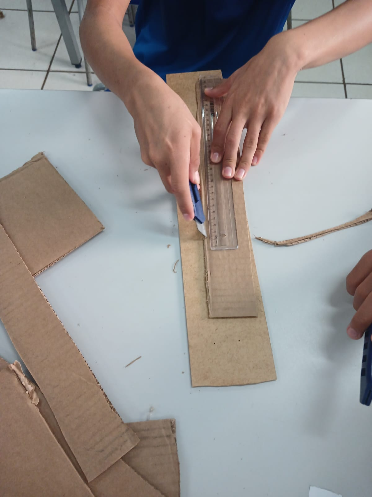
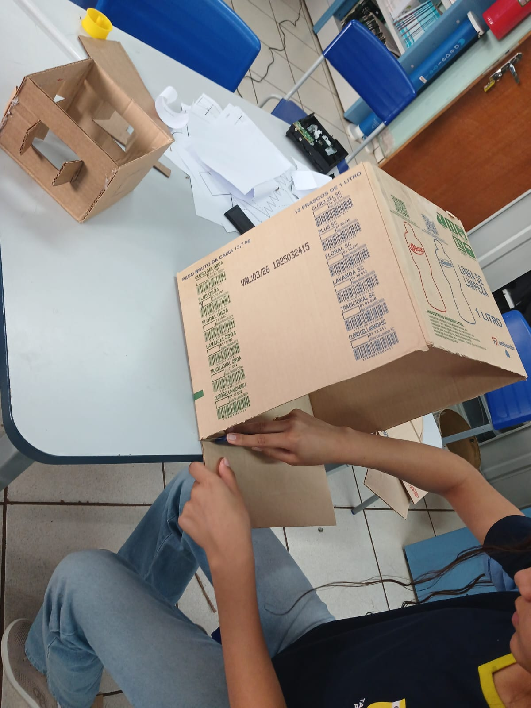
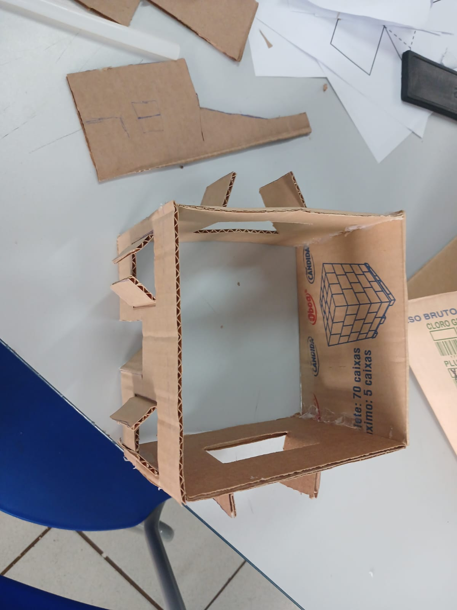
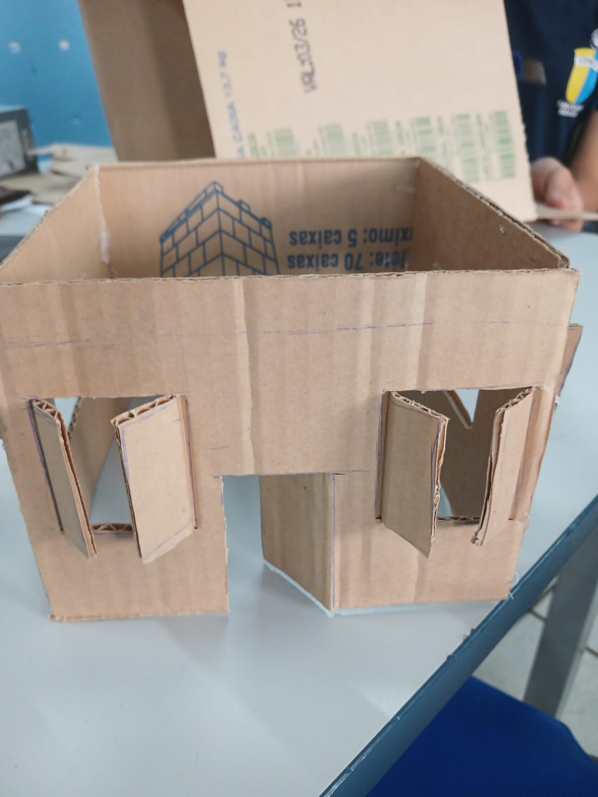
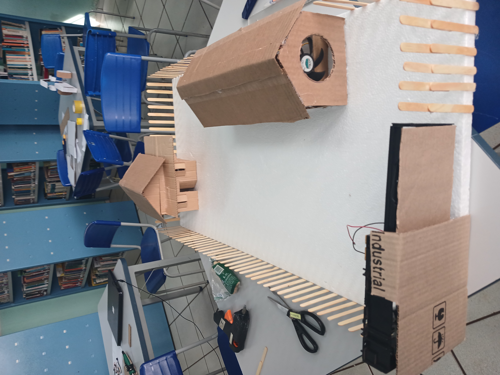
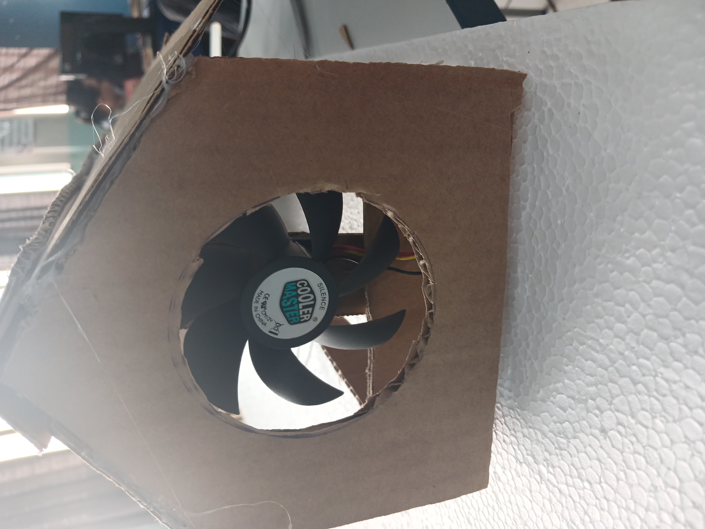
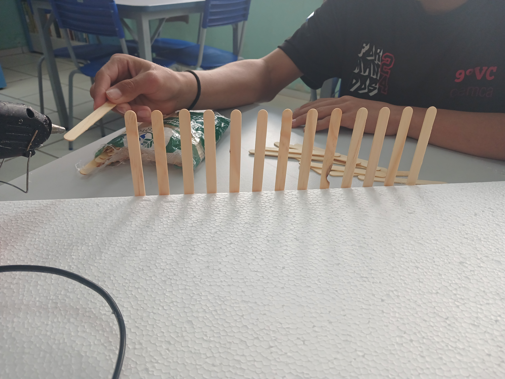

Smart farming
Smart farming, também conhecido como fazenda inteligente,
é um termo utilizado para se referir ao uso de tecnologias e recursos avançados para gerenciar as operações no campo.


Hoje em dia esta cada vez mais comum a tecnologia auxiliando a produção no campo, neste projeto vamos trabalhar com sensor IR para portão eletronico, sensor de
luminosidade para luzes automática, e sensor de temperatura para exastores automáticos
Exaustores automáticos são equipamentos que renovam o ar em ambientes, removendo o ar "velho" e introduzindo ar fresco do exterior.
Eles podem ser encontrados em diferentes formatos e funcionalidades, incluindo opções que se ligam automaticamente
para exaustor iremos usar um cooler de computador

Programação sensor de Temperratura
#include <IRremote.h>
int Sensor_LDR = 0;
int Pin_LDR = A2;
int Pin_LED = 5;
int Pino_receptor = 7;
int motor1f = 8;
int motor1t = 9;
const int LM35 = A0;
const int led = A1;
float armazenavalor;
float Temperatura = 0;
unsigned long tecla_1 = 0xBA45FF00;
unsigned long tecla_2 = 0xB946FF00;
unsigned long tecla_3 = 0xB847FF00;
void setup() {
Serial.begin(9600);
pinMode(Pin_LED, OUTPUT);
pinMode(Pin_LDR, INPUT);
pinMode(led, OUTPUT);
pinMode(LM35, INPUT);
pinMode(motor1f, OUTPUT);
pinMode(motor1t, OUTPUT);
IrReceiver.begin(Pino_receptor);
}
void loop() {
Sensor_LDR = analogRead(Pin_LDR);
Serial.println(Sensor_LDR);
delay(100);
if(Sensor_LDR < 800){
digitalWrite(Pin_LED, HIGH);
}else{
digitalWrite(Pin_LED, LOW);
}
if (IrReceiver.decode())
{
armazenavalor = IrReceiver.decodedIRData.decodedRawData;
if (armazenavalor == tecla_1)
{
digitalWrite(motor1f, HIGH);
digitalWrite(motor1t, LOW);
}
if (armazenavalor == tecla_2)
{
digitalWrite(motor1f, LOW);
digitalWrite(motor1t, HIGH);
}
if (armazenavalor == tecla_3)
{
digitalWrite(motor1f, LOW);
digitalWrite(motor1t, LOW);
}
IrReceiver.resume();
}
Temperatura = (float(analogRead(LM35)) * 5 / 1023) * 50;
Serial.print("Temperatura: ");
Serial.print(Temperatura);
Serial.println("°C");
if (Temperatura > 40){
digitalWrite(led, HIGH);
}else{
digitalWrite(led, LOW);
}
delay(2000);
}
contrução






